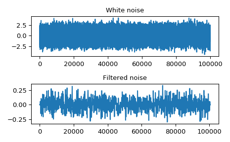

scipy.signal.oaconvolve¶
-
scipy.signal.oaconvolve(in1, in2, mode='full', axes=None)[source]¶ Convolve two N-dimensional arrays using the overlap-add method.
Convolve in1 and in2 using the overlap-add method, with the output size determined by the mode argument.
This is generally much faster than
convolvefor large arrays (n > ~500), and generally much faster thanfftconvolvewhen one array is much larger than the other, but can be slower when only a few output values are needed or when the arrays are very similar in shape, and can only output float arrays (int or object array inputs will be cast to float).- Parameters
- in1array_like
First input.
- in2array_like
Second input. Should have the same number of dimensions as in1.
- modestr {‘full’, ‘valid’, ‘same’}, optional
A string indicating the size of the output:
fullThe output is the full discrete linear convolution of the inputs. (Default)
validThe output consists only of those elements that do not rely on the zero-padding. In ‘valid’ mode, either in1 or in2 must be at least as large as the other in every dimension.
sameThe output is the same size as in1, centered with respect to the ‘full’ output.
- axesint or array_like of ints or None, optional
Axes over which to compute the convolution. The default is over all axes.
- Returns
- outarray
An N-dimensional array containing a subset of the discrete linear convolution of in1 with in2.
See also
convolveUses the direct convolution or FFT convolution algorithm depending on which is faster.
fftconvolveAn implementation of convolution using FFT.
Notes
New in version 1.4.0.
References
- 1
Wikipedia, “Overlap-add_method”. https://en.wikipedia.org/wiki/Overlap-add_method
- 2
Richard G. Lyons. Understanding Digital Signal Processing, Third Edition, 2011. Chapter 13.10. ISBN 13: 978-0137-02741-5
Examples
Convolve a 100,000 sample signal with a 512-sample filter.
>>> from scipy import signal >>> sig = np.random.randn(100000) >>> filt = signal.firwin(512, 0.01) >>> fsig = signal.oaconvolve(sig, filt)
>>> import matplotlib.pyplot as plt >>> fig, (ax_orig, ax_mag) = plt.subplots(2, 1) >>> ax_orig.plot(sig) >>> ax_orig.set_title('White noise') >>> ax_mag.plot(fsig) >>> ax_mag.set_title('Filtered noise') >>> fig.tight_layout() >>> fig.show()
